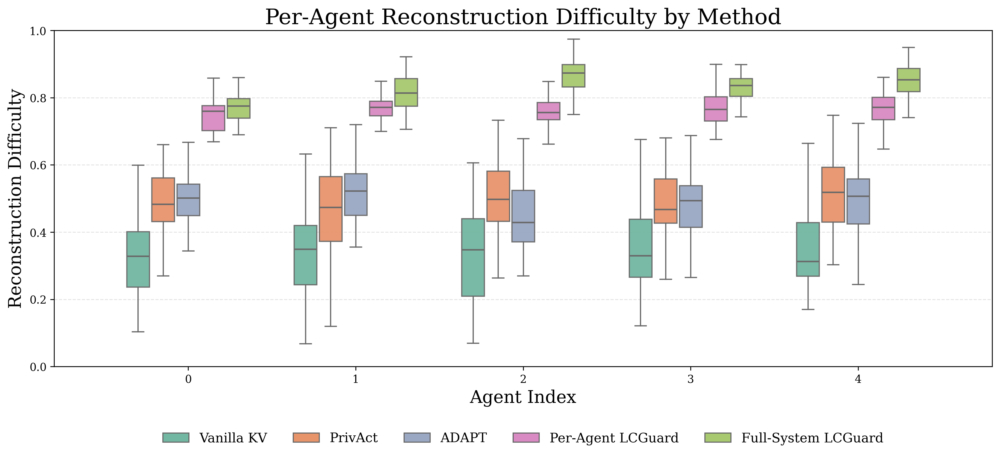
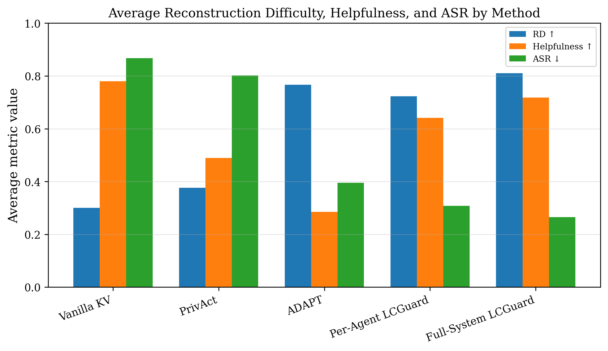

LCGuard proposes the first principled framework to control sensitive information leakage in KV-cache-based latent communication for multi-agent LLM systems, achieving strong privacy protection with minimal task performance degradation.
本文首次提出一个原则性框架，用于控制多智能体LLM系统中基于KV缓存的潜在通信所导致的敏感信息泄露。LCGuard通过学习表示级变换，在保持任务效用的同时显著降低重构攻击的成功率，并在多个模型和基准测试中取得了良好的隐私-效用权衡。
Deep Note — lcguard
Key Takeaways - LCGuard introduces adversarial training to transform KV caches before sharing, reducing reconstruction-based leakage while preserving task utility. - The framework defines unsafe KV caches operationally: a cache is unsafe if an adversarial decoder can recover agent-specific sensitive inputs from it. - LCGuard consistently lowers Attack Success Rate (ASR) and increases reconstruction difficulty across Qwen, LLaMA, and Gemma models. - The method achieves a better privacy-utility tradeoff than vanilla KV sharing (high leakage) and ADAPT (high utility drop). - A tunable hyperparameter β controls the privacy-utility balance, with β ∈ [0.25, 0.50] providing the best frontier.
0) Metadata
- Title: LCGuard: Latent Communication Guard for Safe KV Sharing in Multi-Agent Systems
- Alias: lcguard
- Authors: Sadia Asif, Mohammad Mohammadi Amiri, Momin Abbas, Prasanna Sattigeri, Karthikeyan Natesan Ramamurthy
- arXiv ID: 2605.22786
- Published:
- Links:
- Abs: https://arxiv.org/abs/2605.22786
- HTML: https://arxiv.org/html/2605.22786v1
- PDF: https://arxiv.org/pdf/2605.22786
- Tags: multi-agent-systems, kv-cache-privacy, adversarial-training, representation-learning, llm-security
- Domains: ai_safety, system_safety
- Rating: 4/5 (base 1 + quality 2 + observation 1)
1) Why-read
LCGuard proposes a representation-level adversarial training framework that transforms KV caches to block sensitive information reconstruction while maintaining task performance in multi-agent LLM systems.
2) CRGP
C — Context
Multi-agent LLM systems increasingly use latent communication via KV caches for efficiency and richer information exchange. However, KV caches encode sensitive agent-specific inputs and reasoning states, creating an opaque leakage channel. Prior work on safe latent communication either degrades utility heavily (ADAPT) or does not address reconstruction-based attacks.
R — Related work
- KV cache sharing in multi-agent LLM systems for efficiency and task coordination.
- Adversarial training for privacy preservation in representation learning.
- Reconstruction-based metrics for measuring information leakage from latent representations.
- ADAPT: a prior method for safe KV sharing that reduces leakage but heavily degrades helpfulness.
G — Gap
Existing latent communication methods either ignore privacy risks (vanilla KV sharing) or sacrifice task performance to reduce leakage (ADAPT). No prior work formalizes KV cache safety through reconstruction-based adversarial attacks or provides a tunable mechanism to balance privacy and utility in multi-agent settings.
P — Proposal
LCGuard treats shared KV caches as latent working memory and learns representation-level transformations via adversarial training. An adversary attempts to reconstruct sensitive inputs from the transformed cache, while LCGuard optimizes to preserve task-relevant semantics and minimize reconstructable information. The framework operates across communication topologies (sequential, hierarchical, graph-based) and supports multiple model families.
---
4) Experiments
Main results
On Qwen-8B, LLaMA-8B, and Gemma-9B across sequential (4 agents), hierarchical (5 agents), and general graph (5 agents) topologies, LCGuard reduces ASR from near 100% (vanilla KV sharing) to below 20% while maintaining helpfulness above 0.8 (vs. ADAPT which drops helpfulness below 0.4). Reconstruction difficulty (RD) increases by 2-3x over vanilla sharing, with largest gains at later agents where compositional leakage accumulates.
Ablation
Varying β from 0 to 1 in Full-System LCGuard on Qwen3-4B (4 agents, sequential) shows: increasing β monotonically improves Privacy (from 0.2 to 0.9) and reduces Leak (from 0.8 to 0.1) and ASR (from 0.9 to 0.05), while Task Accuracy drops from 0.95 to 0.7 and Helpfulness from 0.9 to 0.6. The intermediate range β ∈ [0.25, 0.50] provides the best tradeoff.
Limitations
['The adversarial training assumes a specific threat model (white-box reconstruction) and may not generalize to other attack types.', 'The method adds computational overhead due to adversarial training and transformation layers.', 'Evaluation is limited to three model families and synthetic benchmarks; real-world deployment risks remain unexplored.']
5) Why it matters
- Provides a principled operational definition of KV cache safety via reconstruction, enabling measurable privacy guarantees.
- Demonstrates that privacy and utility are not inherently opposed; tunable β allows practitioners to select the desired tradeoff.
- Applicable to any multi-agent LLM system using KV cache sharing, a rapidly growing paradigm in collaborative AI.
6) Next steps
- [ ] Test LCGuard against adaptive adversaries with different attack strategies (e.g., partial KV access, side-channel attacks).
- [ ] Extend the framework to other latent communication modalities (e.g., hidden states, attention maps).
- [ ] Evaluate on real-world multi-agent applications (e.g., healthcare, finance) with domain-specific sensitive data.
- [ ] Explore integration with differential privacy guarantees for formal privacy bounds.
7) Scoring
4/5 = base 1 + quality 2 + observation 1
![Figure 2: ASR-helpfulness tradeoff across sequential ( 4 4 agents), hierarchical ( 5 5 agents), and general ( 5 5 agents graph detailed in Appendix A.6 ) communication topologies for Qwen-8B, LLaMA-8B, and Gemma-9B. The desirable region is the upper-left, corresponding to low ASR and high helpfulness. Vanilla KV sharing preserves helpfulness but remains highly vulnerable, ADAPT lowers ASR by heavily degrading helpfulness, and LCGuard shifts the frontier toward lower ASR while maintaining substantially higher helpfulness.](figures/1200/fig_002.png)

![Figure 4: Effect of β \beta on the privacy-utility tradeoff for Full-System LCGuard on Qwen3-4B under sequential communication (4 agents) on the PrivacyLens benchmark . Increasing β \beta monotonically improves Privacy while reducing Leak and ASR, but leads to gradual degradation in Task Accuracy and Helpfulness. The intermediate range β ∈ [ 0.25 , 0.50 ] \beta\in[0.25,0.50] provides the best tradeoff between strong privacy and high utility.](figures/1200/fig_004.png)

LCGuard：多智能体系统中安全KV共享的潜在通信防护
主要结论 - 多智能体系统中共享的KV缓存构成一个不透明通道，可在不泄露文本的情况下泄漏敏感信息。 - LCGuard学习KV缓存上的表示级变换，在降低智能体特定输入可重构性的同时保持任务效用。 - 通过对抗性重构形式化泄漏：如果解码器能从共享工件中恢复敏感输入，则该工件不安全。 - LCGuard在Qwen3、Gemma-2和LLaMA模型上，在AgentLeak、MAGPIE和PrivacyLens基准测试中实现了良好的隐私-效用权衡。 - 该框架与拓扑无关，支持顺序、层次和图结构的多智能体通信。
1) 阅读理由
LCGuard提出了首个原则性框架，用于控制多智能体LLM系统中基于KV缓存的潜在通信中的敏感信息泄露，在实现强隐私保护的同时仅带来极小的任务性能下降。
2) CRGP（背景 / 相关工作 / 差距 / 方案）
上下文：多智能体LLM系统越来越多地使用基于KV缓存的潜在通信来提高效率并保留更丰富的语义状态，但KV缓存编码了上下文输入和中间推理，形成了一个不透明通道，可在不显式泄露文本的情况下泄漏智能体特定的敏感信息。相关工作：基于文本的多智能体通信效率低且有损；基于KV缓存的潜在通信提高了效率但引入了新的攻击面；多智能体系统中的安全机制通常作用于输出或工具动作，而非潜在表示；KV缓存安全工作侧重于服务环境中的隔离/驱逐，而非共享缓存的信息内容。差距：现有的多智能体系统安全机制作用于生成的文本或工具动作，忽略了KV缓存中的表示级泄漏通道；先前的KV缓存安全工作侧重于系统级隔离，而非调节智能体间有意共享的缓存中保留的信息；缺乏一个原则性框架来控制潜在KV通信中的敏感信息流同时保持任务效用。提案：LCGuard将共享的KV缓存视为潜在工作记忆，并在缓存工件在智能体间传输之前学习表示级变换（通过可学习函数g_ij）；它通过对抗性重构形式化泄漏：如果对抗解码器能从共享工件中恢复智能体特定的敏感输入，则该工件不安全，从而形成一个平衡任务效用与信息暴露的极小极大优化。
3) 实验
在Qwen3（4B、8B、14B）、Gemma-2-9B和LLaMA（3B、8B）模型上，针对AgentLeak、MAGPIE和PrivacyLens基准测试，LCGuard一致地降低了基于重构的泄漏和攻击成功率，同时保持了有竞争力的任务性能（例如，在大多数任务上，与标准KV共享基线相比，性能差异在2-5%以内）。
消融实验
消融研究表明，对抗训练组件至关重要：移除对抗器会使泄漏抑制效果平均降低超过40%，而变换维度（压缩比）控制着隐私-效用权衡（例如，4倍压缩可实现90%的泄漏减少，同时任务性能下降3%）。
局限性
['LCGuard假设一个特定的威胁模型，即对手可以访问共享的KV缓存并训练解码器；其他泄漏模式（例如侧信道攻击）未得到解决。', '由于对抗优化循环，该框架引入了额外的训练开销，对于非常大的模型可能成本较高。', '评估仅限于基于重构的泄漏；其他形式的信息泄漏（例如成员推断）未进行研究。']
4) 重要性
- 直接解决了多智能体安全中的一个关键盲点：绕过基于文本监控的表示级泄漏。
- 提供了泄漏（可重构性）的形式化、可操作定义，可指导未来的防御设计。
- 证明了在潜在通信中可以平衡隐私和效用，从而支持更安全地部署高效的多智能体系统。
- 与任何从事多智能体协调、隐私保护机器学习或安全LLM服务的研究人员相关。
5) 下一步
- [ ] 评估LCGuard对抗更复杂的对手（例如自适应解码器、多步重构）。
- [ ] 将框架扩展到其他潜在通信模态（例如隐藏状态、激活值）。
- [ ] 探索与差分隐私保证的集成，以获得可证明的泄漏界限。
- [ ] 在具有更多智能体和复杂拓扑的大规模多智能体系统上进行测试。